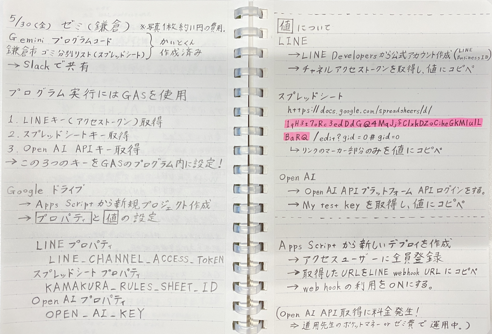
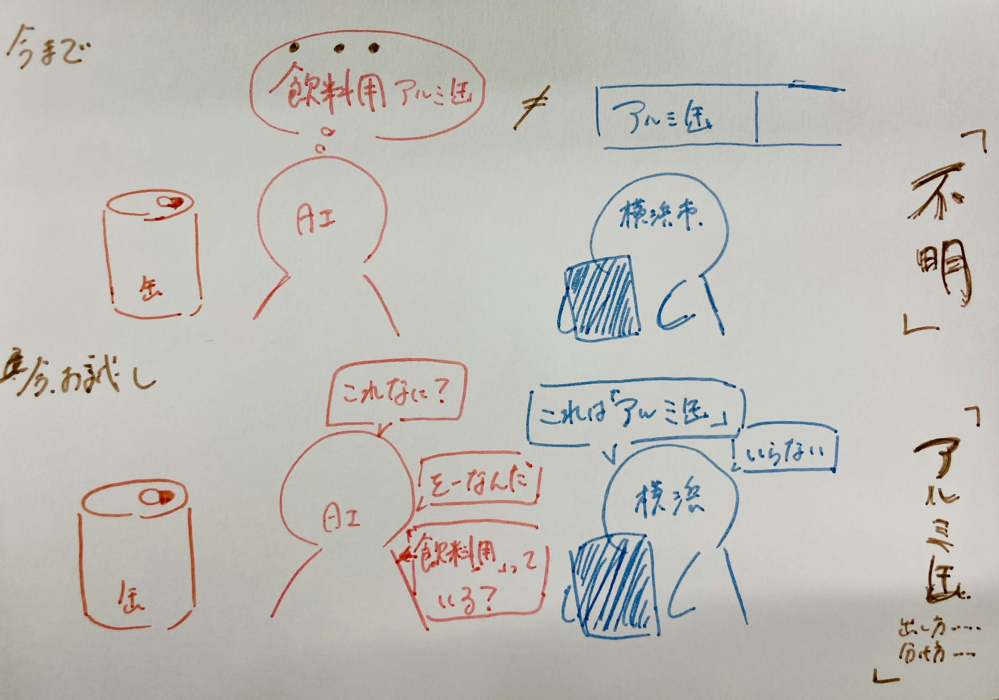
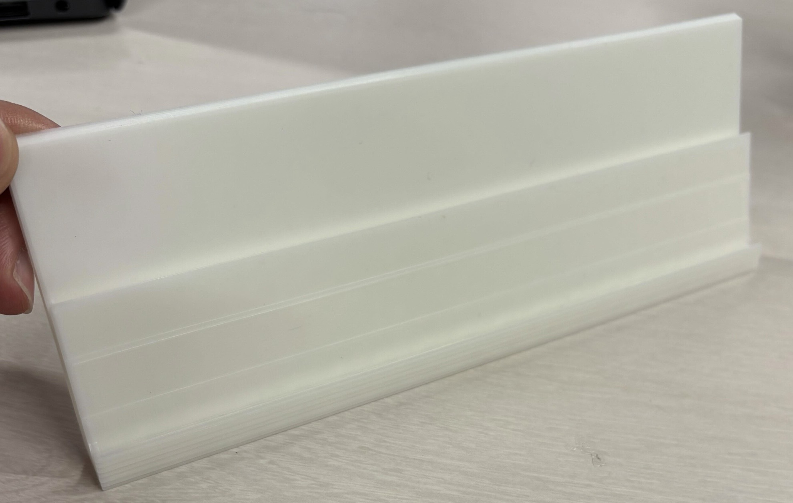
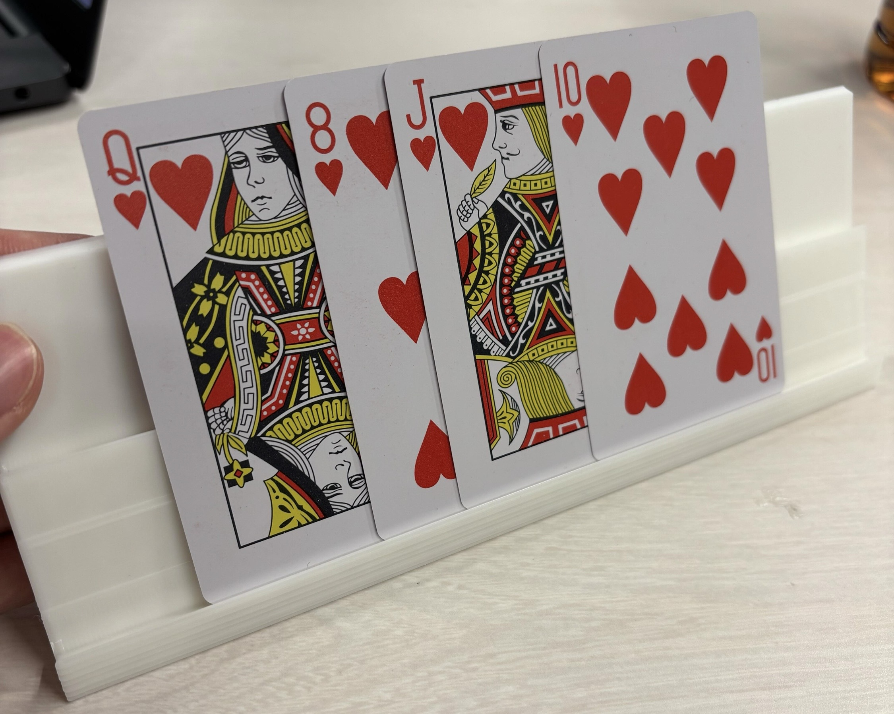

２０２５年５月３０日
【やったこと】
1.鎌倉市ゴミ問題の画像認識サービスの作成
2.他所属グループの進捗情報の確認
鎌倉市ゴミ問題の画像認識サービスの作成

やったことに似たサイトを見つけたので貼っておく(完全に一致する内容ではない)
「LINE Messaging API」×「Google Apps Script」で、Gmailの通知をLINEに連携！
作成したサービスから、別の案も考察中。精度の向上のため。

他所属グループの進捗情報の確認
トランプ班
カードを立てるスタンド作成(3Dプリンタで作成)。前回とは違った形状で作成

他にも、カードをシャッフルする時の土台の案出し
個人的なトランプ案(5.23の案をブラッシュアップしてたくむにも共有)
→板の形状は、窓口のアクリル板のように、下の部分に空洞をあけて、受け取りしやすいようにする。
世代間交流班
ななみとわかばが進めてくれた！
カードゲームに決定！(昔の言葉やモノを当てるゲーム)
具体的には・・・
名称「ばあば・じいじに聞け」
サブテーマ「平成生まれよ、知恵と妄想で勝ち残れ！」
Canvaでデザイン作成。厚紙でカードを作成。印字は悩み中…。カードの入れ物を３Dプリンタで作成。
イラストカード(名称付き)と、解答の説明カード(文字版)を作成。
説明ゲームで、会話に適している
ジェスチャーで伝えるのも取り入れる？！
モノ案→ちゃぶ台・割烹着etc.
言葉案(昔の流行語)→ナウい・チョベリバ・チョベリグetc.
(モノのリストアップ→ななみ。言葉のリストアップ→わかば.)
次回から形にしていく!
買い物サービスは次回話すかも…。
個人的な世代間交流ゲーム案(メンバーに共有済み)
イラストカードのモノを３Dプリンタで出力！
手を使うという観点から、モノを触るのも良いのではないかという提案。
カードゲームの「DOBBLE」や「おばけキャッチ」を活用したゲームもありなのでは？！
ex:カードに名称だけ描いといて、一致するものを取るゲーム
「見ざる・聞かざる・言わざる」みたいな役割分担も良いかも？！
現代バージョンもあっても良いかも？！(それな・ま？・が？etc.)
「DOBBLE」・・・共通するマークを素早く見つけて遊ぶカードゲーム
「おばけキャッチ」・・・カードに描かれた絵と同じコマを素早く取るゲーム
新情報→Bambuで３Dプリンタ出力できる！ただし、できたモノをいじることはできない。Fusionだとそれが可能。